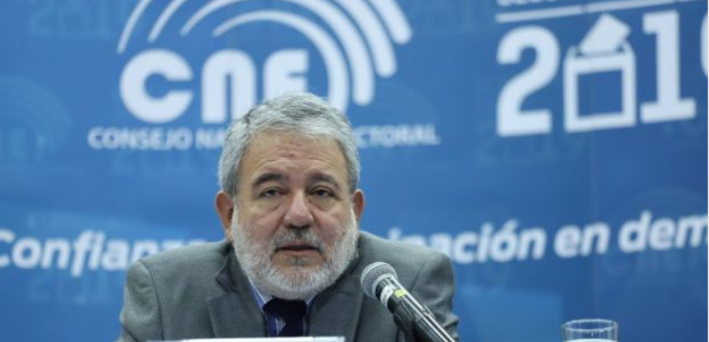
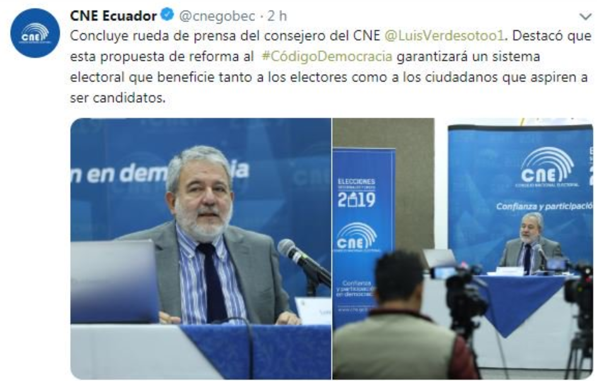

Proponen que candidatos con baja votacion retornen dinero
La mañana de este 5 de abril de 2019, uno de los consejeros del Consejo Nacional Electoral (CNE), Luis Verdesoto, dio a conocer sus propuestas de reformas para el Código de la Democracia.
Según informó Verdesoto, una de las propuestas consiste en implementar "debates obligatorios" en las campañas electorales para que la ciudadanía cuente con información directa sobre los proyectos y programas de los candidatos.
Otro elemento fundamental en las reformas, es la obligatoriedad de los candidatos, que participen en las próximas elecciones y que no superen el 4% de votación, de devolver el dinero recibido del Estado a través del Fondo de Promoción Electoral.
Verdesoto manifestó que con estas reformas buscan "nuevos modelos de partidos políticos, con mecanismos de democracia interna, formación y renovación de cuadros: militantes y afiliados, que construyan su trayectoria con estabilidad y sin improvisaciones".
La reforma al Código de la Democracia ha sido enfocada en seis grandes capítulos que responden a un diagnóstico hecho por analistas. “Necesitamos razonar con serenidad sobre qué tipo de reformas institucionales requiere el país”, concluyó el funcionario